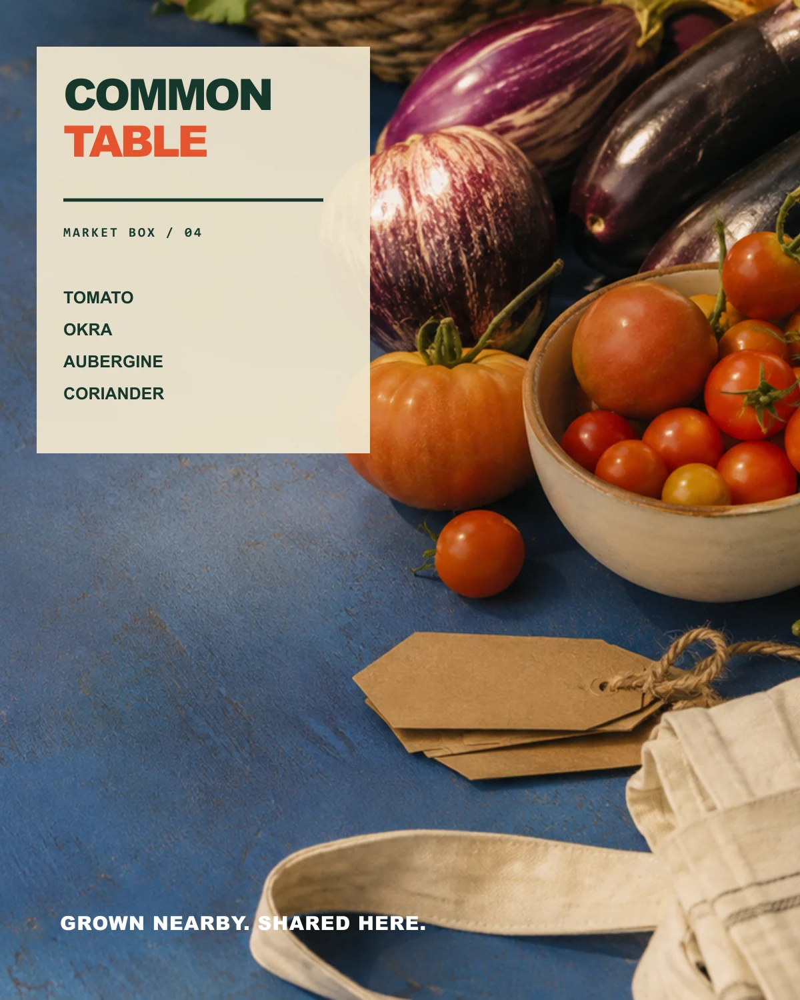
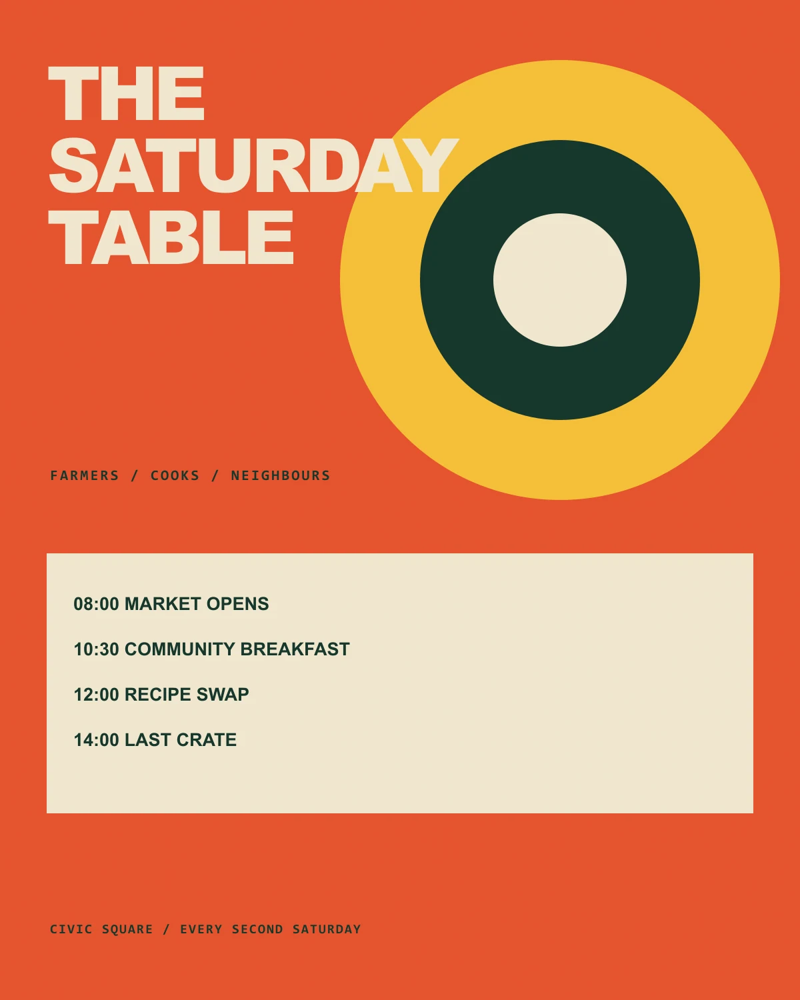
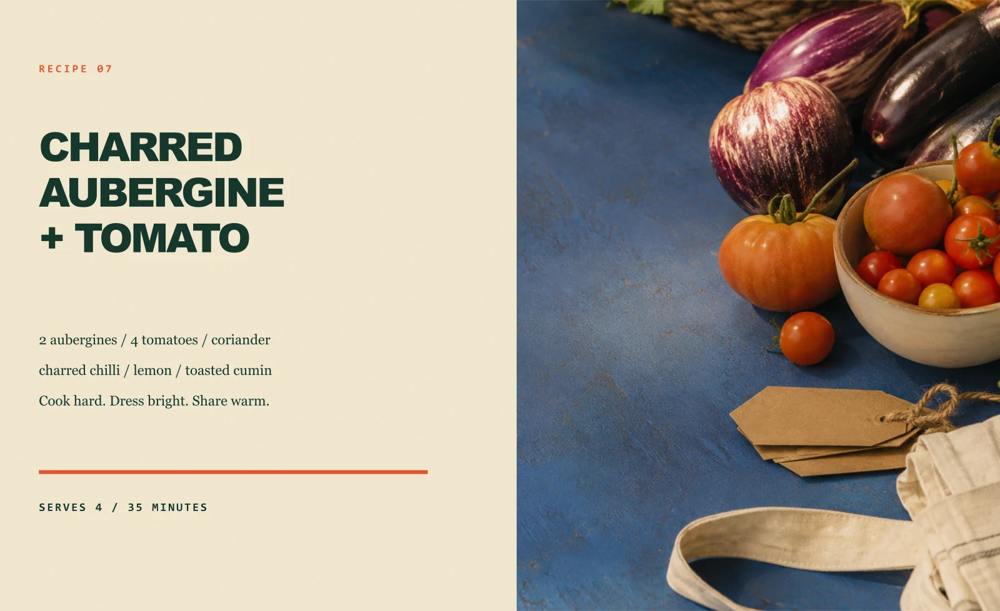
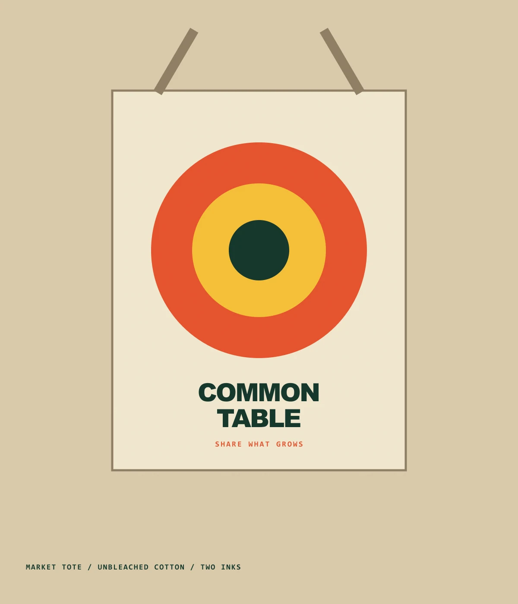
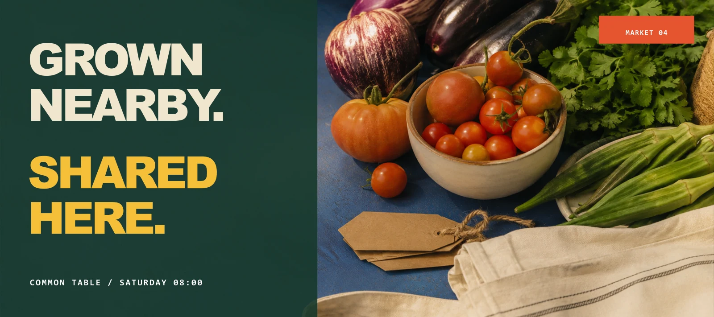

Typography
Bold grotesk market calls, a readable serif for recipes and mono for provenance.
Self-initiated fictional food collective / 2026
Concentric plate shapes become a gathering symbol. Produce photography and recipe typography keep the identity appetising and useful.

A produce label system that combines honest photography with clear weekly contents.

A public-market poster that makes the program as visible as the event identity.

A recipe editorial that gives ingredients, timing and method an appetite-led hierarchy.

A two-ink merchandise application that keeps the identity useful and inexpensive to reproduce.

A digital banner that separates the message from the photograph while preserving one shared colour field.
01 / Communication problem
Urban households who value local produce, public meals and practical seasonal cooking.
Concentric plate shapes become a gathering symbol. Produce photography and recipe typography keep the identity appetising and useful.
Typography
Bold grotesk market calls, a readable serif for recipes and mono for provenance.
Colour
Leaf green, tomato orange, turmeric yellow and unbleached cloth.
Composition
Big plate circles anchor posters; packaging uses a consistent contents panel; editorial spreads keep the food generous.
Image making
Market still life, flat plate geometry, paper labels and two-ink merchandise.
Mixture formula
Selected alternate / Rejected direction
A rustic hand-lettered route looked familiar but interchangeable. The final system uses modern geometry and specific operational copy to feel local without becoming quaint.
AI production disclosure
Food photography was generated with AI. The collective, event schedule and products are fictional; identity, copy, layout and applications were authored for this study.
Freelance collaborations